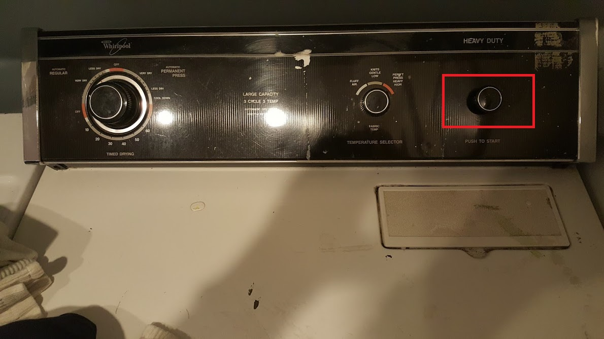

<header>
    <title>1209 Glen dryer</title>
</header>
<body bgcolor=#cccccc>
<font face=arial size=+3>
    <h1>Choose how long you want the dryer to run:<br></h1>
    <h1>Select the temperature you prefer -- <ul><li>"fluff air" = "not very hot"</li><li>"knits gentle" = "hotter"</li><li>"heavy high" = "hottest"</li></ul></h1>
    <h1>Depress the start button:<br></h1>
    <h1>Occasionally clean the lint screen:<br></h1>
</font>
<hr>
    <table bgcolor=#cccccc border=0 width=100% >
        <tr>
            <td>
                e-mail Nelson: <a href='mailto:nelson.sproul@gmail.com'>nelson.sproul@gmail.com</a>
                call/text Nelson: <a href='tel:2096777685'>(209)677-7685</a>
            </td>
            <td>
                e-mail Deirdre: <a href='mailto:dvsproul@gmail.com'>dvsproul@gmail.com</a>
                call/text Deirdre: <a href='tel:4153706422'>(415)370-6422</a>
            </td>
            <td><a href='index.html'>1209 Glen guide home page</a></td>
        </tr>
    </table>
